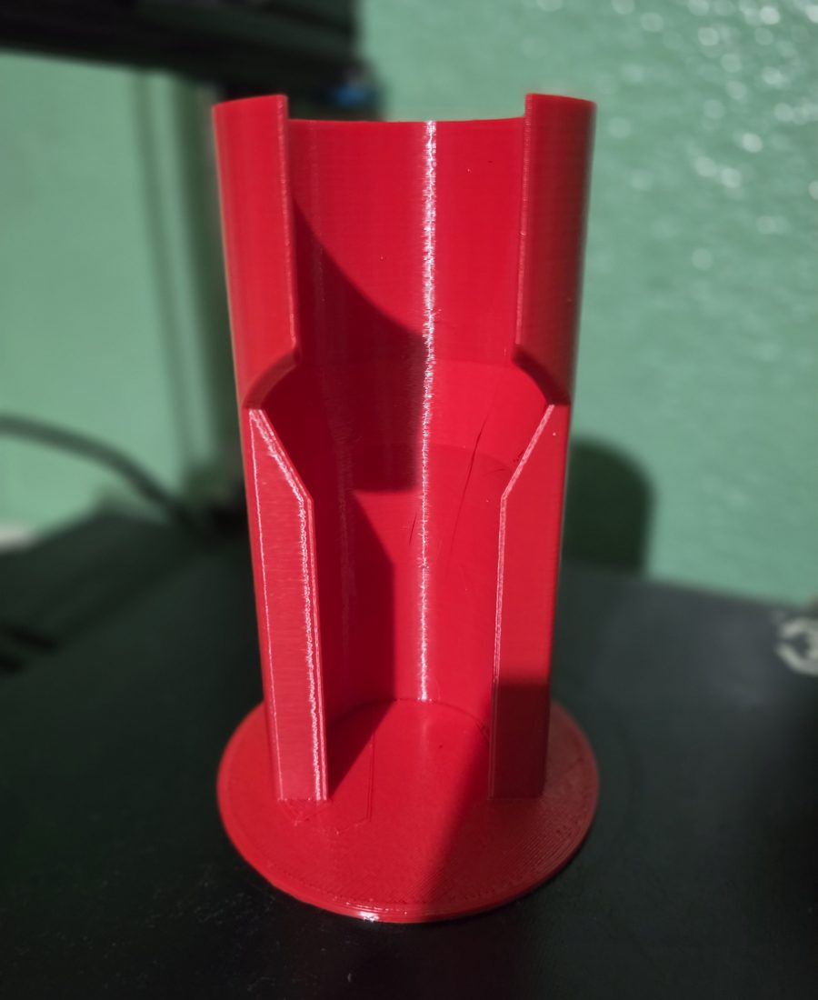

Impresión 3D a la medida
Diseñamos e imprimimos piezas a partir de una foto, unas medidas o la pieza dañada.
- Repuestos que ya no se venden
- Soportes y herramientas para tu trabajo
- Prototipos de productos
- PLA y PETG según el uso
Piezas en impresión 3D a la medida, asistentes de WhatsApp con inteligencia artificial y páginas web para negocios en Guatemala.
Este chat es el mismo asistente que instalamos en los negocios. Pregúntale lo que quieras.
Tres líneas de trabajo para resolver lo que tu negocio necesita, sea una pieza que puedes tocar o un sistema que atiende a tus clientes.
Diseñamos e imprimimos piezas a partir de una foto, unas medidas o la pieza dañada.
Responden a tus clientes a cualquier hora con la información de tu negocio, y te pasan la conversación cuando hace falta.
Tu negocio en internet, con dominio propio y un chat que atiende a tus visitantes como el de esta página.
Proyectos reales, hechos a la medida de cada cliente.

Impresión 3D
Un técnico de aire acondicionado necesitaba sostener sus latas de refrigerante boca abajo para cargar equipos. Diseñamos el soporte a la medida de sus latas, con un asiento cónico que las centra y una abertura frontal para la válvula y la manguera.
Asistente virtual
Recibían todos los días las mismas consultas sobre servicios, tarifas y a quién contactar. Implementamos un asistente que responde las 24 horas en WhatsApp y en su sitio web.
Sin vueltas: nos cuentas qué necesitas y te decimos cuánto cuesta y cuánto tarda.
Por WhatsApp, Instagram, Messenger o este chat. Para piezas, una foto y las medidas ayudan mucho.
Revisamos tu caso y te confirmamos el precio exacto y el tiempo de entrega por el mismo chat.
Imprimimos tu pieza o configuramos tu asistente o tu página, y te acompañamos después de la entrega.
Precios de referencia. Cada proyecto se confirma con una cotización según tus necesidades.
| Pieza pequeñaHasta unos 10 cm | desde Q50 |
| Pieza medianaDe 10 a 20 cm | desde Q100 |
| Diseño o modelado 3DA partir de foto, medidas o pieza dañada | desde Q75 |
| Web PresenciaPágina web, dominio y botón de WhatsApp | Q3,500+ Q200 al mes |
| Bot AtiendeAsistente de WhatsApp con IA | Q3,000+ Q600 al mes |
| Combo DigitalPágina web con chat y asistente de WhatsApp | Q6,000+ Q750 al mes |
Los servicios digitales tienen un pago de instalación y una mensualidad de mantenimiento. Pagos por transferencia, depósito o efectivo contra entrega; para servicios digitales, 50% de anticipo y 50% al entregar.
Escríbenos por el canal que prefieras. Te responde nuestro asistente al instante y Aldair te da seguimiento personal.